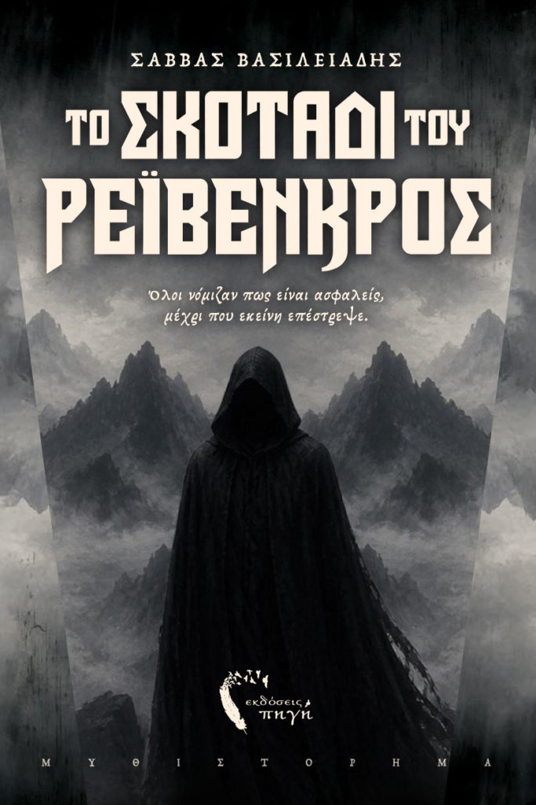

Ο Συγγραφεας

Όλοι νόμιζαν πως είναι ασφαλείς, μέχρι που εκείνη επέστρεψε.
Προπαραγγειλε το ΒιβλιοΤο Ρέιβενκρος είναι ένας τόπος τυλιγμένος στη σιωπή, εκεί όπου η ομίχλη δεν φεύγει ποτέ. Κανείς δεν μιλάει για το σκοτεινό παρελθόν – όμως όλοι το κουβαλούν. Μια άγνωστη γυναίκα καταφθάνει ένα παγωμένο βράδυ, κι από εκείνη τη στιγμή όλα αλλάζουν.
Οι παλιοί ψίθυροι ξυπνούν κι ο αέρας μυρίζει ξανά καμένο ξύλο. Μια κατάρα, παλιά όσο και το ίδιο το χωριό, θα ζητήσει να ολοκληρωθεί και η μάγισσα θα είναι αμείλικτη.
Ανεξήγητα φαινόμενα αρχίζουν να εμφανίζονται στο Ρέιβενκρος: η ομίχλη, τα κοράκια, το χιόνι, μια ανίατη ασθένεια. Όλοι θα οδηγηθούν στην παράνοια και η μάγισσα θα ψιθυρίζει ανάμεσα από τα δέντρα του δάσους, καλύπτοντας τα πάντα με το σκοτεινό της πέπλο.
Αν τολμάς να αντικρίσεις τα πύρινα μάτια της, τότε το Ρέιβενκρος σε περιμένει…

Ένα ατμοσφαιρικό βιβλίο φαντασίας όπου η μαγεία, οι κατάρες, οι δολοφονίες και τα αρχαία μυστικά μετατρέπουν το Ρέιβενκρος σε έναν τόπο όπου τίποτα δεν είναι όπως φαίνεται. Το συγγραφικό ντεμπούτο του Σάββα Βασιλειάδη στο γοτθικό μυθιστόρημα.
Αποκτησε το Αντιτυπο σου